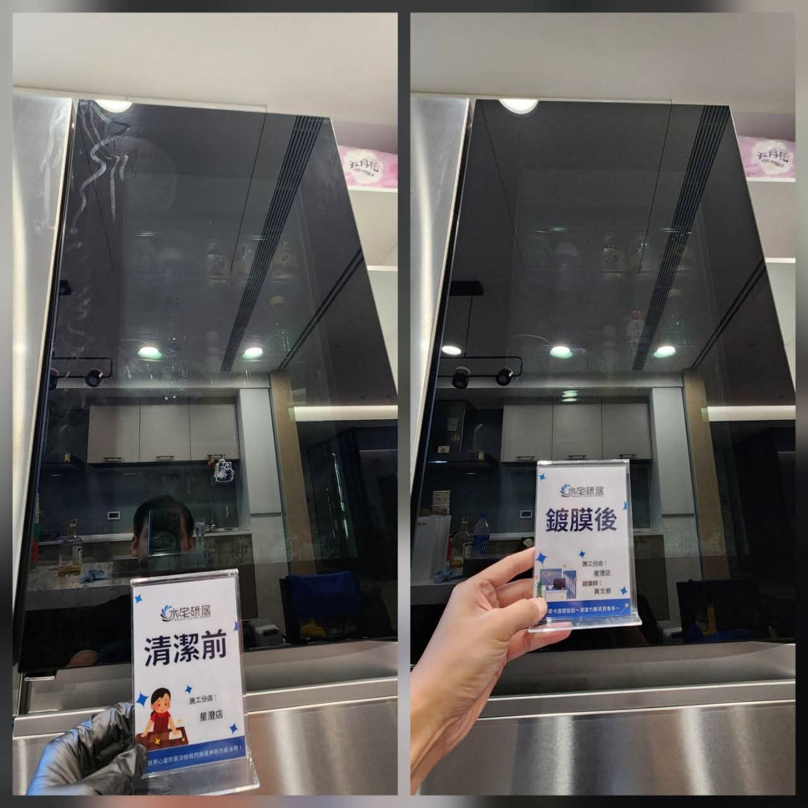
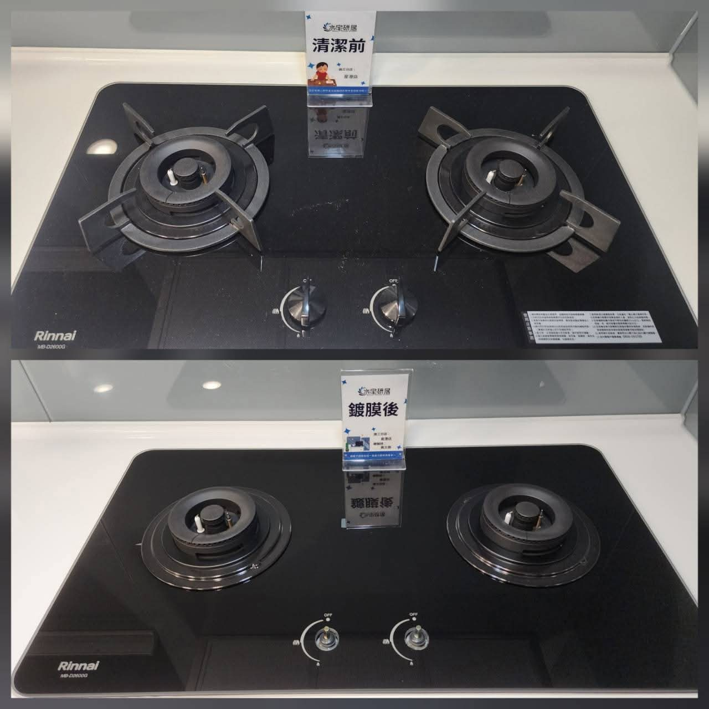
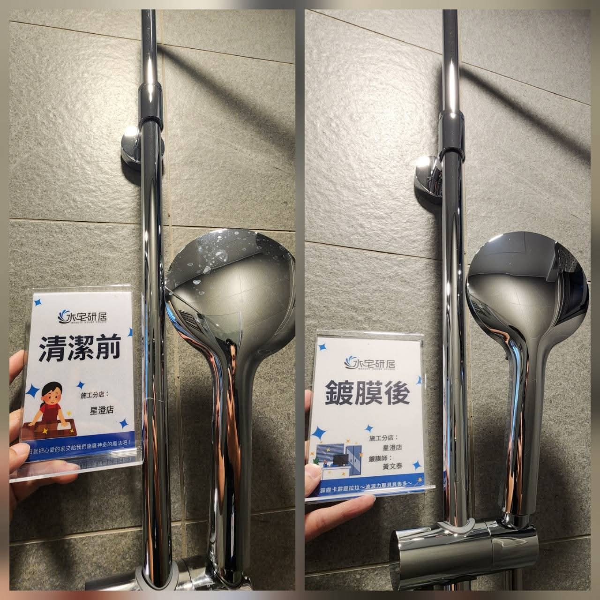

入住前的浴室與廚房鍍膜評估
服務重點不是把所有狀況都硬做，而是判斷物件是否適合，協助客戶在入住前降低後續水垢維護壓力。
小編發文要維持專業、保守、可信。不要把鍍膜講成神奇魔法，要讓客戶理解「先評估、適合才施作、後續比較好維護」。
服務重點不是把所有狀況都硬做，而是判斷物件是否適合，協助客戶在入住前降低後續水垢維護壓力。
年齡約 30-55 歲，女性預約居多，重視居家品質、清潔效率、美觀與收納感。心態偏預防，不想入住後才被水垢困住。
玻璃與五金物件狀態以 5 年內為評估上限。重垢需先看照片或現場，不能承諾每個案例都能施作。
優先使用同一物件前後對比，讓觀眾在 3 秒內看懂差異。施工畫面只當輔助，不當主軸。

玻璃 適合主打「視覺清透與反光」
爐台 適合主打「廚房也能評估」
五金 適合主打「水斑延緩堆疊」每篇都保留「不誇大」原則。小編可依素材替換第一句，照片建議用同物件前後對比。
同一支水龍頭，清潔前後差異看得出來。 水垢不是一天形成的，通常是每天用水、乾掉、再堆疊，慢慢讓五金失去原本的亮度。 鍍膜不是讓你永遠不用清潔，而是讓水垢堆疊速度變慢，後續清潔也比較省力。 日常維護方式很簡單： 洗碗精加清水，約 3-4 週整理一次即可。 新屋、交屋、入住前，建議先傳照片評估。
浴室玻璃最怕的不是髒一下，而是水痕越疊越厚。 很多人一開始用菜瓜布刷、買水垢清潔劑、試偏方，最後發現玻璃還是霧霧的，甚至多了刮痕。 我們會先看玻璃狀況。 如果評估適合，才會安排清潔與鍍膜。 鍍膜後還是需要保養，但清潔方式會簡單很多： 洗碗精加清水，定期擦拭即可。 不是每個重垢案例都能做，先評估比較負責。
鍍膜不只看浴室。 廚房檯面、爐台、水槽、五金，只要材質與狀況適合，也可以一起評估。 對新屋客戶來說，最好的時間點通常是： 裝潢完成 → 細清完成 → 鍍膜 → 入住使用。 先把容易卡水垢、油膜、皂垢的位置處理好，入住後維護會輕鬆很多。 想知道家裡哪些地方適合？ 可以先傳照片，我們會協助初步判斷。
鍍膜不是魔法，也不是做完就永遠不用清潔。 比較像汽車鍍膜： 做完之後車還是要洗，只是表面比較好整理，也能延緩髒污堆疊。 浴室、廚房鍍膜也是一樣。 重點不是「完全不用清潔」，而是讓後續維護變簡單。 我們會誠實評估物件狀況。 不適合的案例，不會為了成交硬做。
新屋交屋時，浴室和廚房看起來都很新。 但真正麻煩的，通常是入住後才開始： 玻璃水垢、五金霧化、縫隙發霉、檯面卡痕跡。 如果你在意居家品質、清潔效率和整體美觀，建議在入住前就先評估鍍膜。 流程建議： 裝潢完成 → 細清 → 鍍膜 → 入住。 越早規劃，後續維護越省力。
我們提供保固，就代表施工前必須先判斷效果與持久性。 如果物件狀況已經不適合，硬做只會讓客戶期待落差更大。 所以我們會先看： 使用年限、材質狀況、水垢程度、是否有刮痕、是否為溫泉水源。 適合才施作。 不適合也會直接說明。 這不是少接一單，而是對保固和效果負責。
除了鍍膜，我們也有衛浴防霉縫隙服務。 但這項服務只限新屋施作。 原因很簡單： 縫隙一旦已經受潮、發霉或被清潔劑反覆侵蝕，後續效果就很難穩定。 新屋階段先處理，才能把預防效果做到比較完整。 如果你是預售屋交屋、新成屋、裝潢後準備入住，可以一起詢問評估。
如果已經入住一段時間，玻璃或五金開始有明顯水垢，可以先不要急著亂刷。 很多刮痕不是水垢造成的，是後來用菜瓜布、強酸、偏方反覆處理留下的。 已入住物件我們也能評估，但會看狀況。 大多數可接受年限約 3 年內，極限約 5 年內，重垢需個別判斷。 先傳照片，比現場硬做更安全。
短影音要像「案例證據」，不要像投影片。每支都先讓觀眾看到前後差異，再補觀念與 CTA。
| 主題 | 秒數 | 畫面 | 字幕 | 旁白 |
|---|---|---|---|---|
| 同物件前後對比 | 0-3 | 水龍頭前後對比滿版 | 同一物件，不是換新 | 先看同一支水龍頭的清潔前後差異。 |
| 清潔前 | 3-7 | 清潔前局部放大 | 水痕、霧感、堆疊感 | 水垢不是一天形成，是每天用水後慢慢堆起來。 |
| 鍍膜後 | 7-12 | 鍍膜後局部放大 | 表面恢復清透感 | 鍍膜後不是不用清潔，而是後續更好整理。 |
| 案例切換 | 12-22 | 玻璃、爐台、五金前後對比 | 浴室、廚房都能評估 | 不只浴室玻璃，水槽、五金、廚房檯面也能看狀況評估。 |
| 專業評估 | 22-29 | 施工或現場評估畫面 | 適合才施作 | 我們提供保固，所以不適合的物件不會硬做。 |
| CTA | 29-35 | 完成照或品牌牌卡 | 新屋・交屋・入住前，先傳照片評估 | 清潔約三到四週一次，用洗碗精加清水就能簡單維護。 |
0-2 秒：同一物件前後對比 字幕：不是換新，是清潔前後差異 2-6 秒：清潔前局部 字幕：水垢會慢慢堆疊 6-10 秒：鍍膜後局部 字幕：後續清潔更簡單 10-15 秒：完成照＋CTA 字幕：新屋、交屋、入住前，先傳照片評估
開頭：很多人以為鍍膜後就不用清潔。 中段：其實不是。就像汽車鍍膜後還是要洗車，浴室和廚房鍍膜也是一樣。 重點：它的價值是延緩水垢堆疊，讓清潔方式更簡單。 保養：洗碗精加清水，約 3-4 週整理一次。 結尾：先傳照片評估，適合才施作。
限動適合做互動與教育，不要每則都硬銷售。建議穿插投票、問答、案例前後對比。
你家浴室玻璃最困擾的是？ A 水痕霧霧的 B 五金卡水垢 C 縫隙發霉 D 清潔太麻煩
鍍膜後是不是永遠不用清潔？ 答案：不是。 但清潔方式會簡單很多。
同一物件前後對比 左：清潔前 右：鍍膜後 差異看反光最明顯。
準備交屋或入住？ 先傳浴室、廚房照片 我們幫你看哪些地方適合評估。
回覆要先篩選物件狀態，不要一開始就報價或保證效果。
您好，價格會依施作範圍、材質與物件狀況評估。 可以先傳浴室玻璃、五金、水槽或廚房檯面的照片給我們，我們會先協助初步判斷是否適合施作，再提供建議。
您好，重垢需要先看狀況，不會每個案例都直接施作。 一般會看使用年限、水垢厚度、是否已經刮傷、材質狀況。您可以先傳照片，我們會先幫您評估。
您好，溫泉水源我們目前不施作。 因為水質條件會影響後續效果與穩定性，我們不希望為了成交而讓您對效果有錯誤期待。
您好，目前親水性的懶人清透鍍膜保固 1.5 年，疏水性易潔鍍膜保固 3 年。 實際仍需依材質、使用狀況與評估結果確認。
廣告主軸建議分成新屋預防、同物件前後對比、清潔效率三組測試。
新屋交屋後，別等水垢堆起來才處理。 浴室玻璃、五金、水槽、廚房檯面，都可以在入住前先評估鍍膜。 鍍膜不是永遠不用清潔，而是延緩水垢堆疊，讓後續維護更簡單。 新屋、交屋、入住前，先傳照片評估。
同一物件清潔前後對比，看得出差異。 我們不把鍍膜說成魔法，也不承諾永遠不用清潔。 真正的價值是讓表面更好維護，延緩水垢再次堆疊。 適合才施作，不適合也會直接說。
你是不是也買過很多水垢清潔劑，卻還是越刷越累？ 鍍膜後不是不用清潔，而是讓清潔方式變簡單。 洗碗精加清水，約 3-4 週整理一次。 浴室、廚房物件先傳照片，我們協助評估。
每週至少 2 則案例、1 則觀念、1 則互動。素材不足時，優先把同一組前後對比拆成貼文、短影音、限動三種格式。
| 天數 | 格式 | 主題 | 素材 | 目的 |
|---|---|---|---|---|
| D1 | Reels | 同一支水龍頭前後對比 | 水龍頭對比圖 | 建立信任 |
| D2 | 限動 | 你家最困擾哪種水垢？ | 投票 | 蒐集痛點 |
| D3 | 貼文 | 鍍膜不是永遠不用清潔 | 案例圖 | 教育市場 |
| D5 | Reels | 玻璃清潔前後 | 玻璃對比圖 | 展示差異 |
| D7 | 貼文 | 新屋入住前流程 | 浴室完成照 | 引導預約 |
| D9 | Reels | 廚房爐台也能評估 | 爐台對比圖 | 擴大服務認知 |
| D11 | 貼文 | 為什麼不適合不硬做 | 施工畫面 | 強化專業感 |
| D14 | 限動 | 交屋前照片健檢 | 問答框 | 導私訊 |
水宅研居星澄店的文案要避免過度神化。以下是小編發文前必看檢查表。